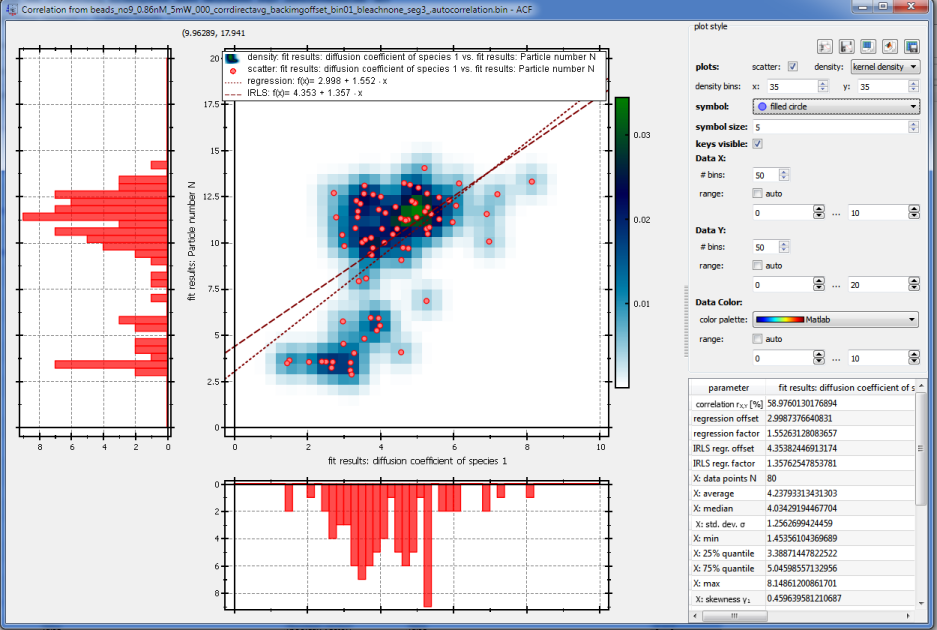

$$qf_commondoc_header.start$$ $$qf_commondoc_header.end$$
A correlation plot view or window is a central widget, provided by QuickFit, which allows to display a correlation plot between any two sets of data $$math:x_i$$ and $$math:y_i$$. The following image shows an example.

- The left part of the widget shows a plot with a scatter plot in the center and the (marginal) histogram on the left and bottom border. The scatter plot may also contain a kernel density estimate (basically a smoothed histogram, using a Gaussian kernel), or a histogram of the dataset. The plot also shows a normal and a robust (IRLS) linear regression line to the dataset $$math:(x_i,y_i)$$. You can right-click the plot to open a context-menu, which allows to print, copy and save the data in the plot. You can also copy the plot into a table RDR.
- The appearance of the correlation plot can be changed in several ways:
- plots: scatter switches the scatter plot on and off.
- symbol and symbol size sets the symbol, used for the scatter plot.
- key visible switches the key in the plot on and off
- plots: density allows to select, whether a histogram, or a kernel density estimate are displayed.
- plots: density bins allows to set the number of bins, that are used to span the range of the 2D histogram or kernel density estimate in X- and Y-direction.
- Data X/Y: # bins allows to set the number of bins, that are used to span the range of the histogram.
- Data X/Y: range allows to set the range of values, that are used for the histogram:
- auto uses the full data range for the histogram
- Data Color Sometimes, a 3-dimensional dataset $$math:(x_i,y_i,z_i)$$ is provided. Then the third dimension Z, can be used to give each data point in the scatter plot another color. Here you can set the range of Z-values and the color palette used for this feature.
- additional widgets may appear, based on the place, where this view is used within QuickFit
- The table at the bottom right of the window shows several statistical parameters (mean, median, quantiles, standard deviation, skewness etc.) for each distribution X:/Y:. In addition the parameters of the normal and robust (IRLS) linear regressions and Pearson's correlation coefficient are displayed.
- At the top of the window, a series of buttons offers a set of possibilities to export the data in the histogram:
 Print histogram report prints a report with the histogram and the table of statistical properties.
Print histogram report prints a report with the histogram and the table of statistical properties. Save histogram report saves a report with the histogram and all statistical parameters as a PDF or ODT file.
Save histogram report saves a report with the histogram and all statistical parameters as a PDF or ODT file. Copy data used for histogram copies the input data, used to calculate the histogram, as a table into the clipboad (e.g. for use with Excel or Origin)
Copy data used for histogram copies the input data, used to calculate the histogram, as a table into the clipboad (e.g. for use with Excel or Origin) Copy data used for histogram as Matlab script copies the input data, used to calculate the histogram, as a Matlab script
Copy data used for histogram as Matlab script copies the input data, used to calculate the histogram, as a Matlab script Save data used for histogram saves the input data, used to calculate the histogram, into a data file (CSV, Matlab, Excel, ...)
Save data used for histogram saves the input data, used to calculate the histogram, into a data file (CSV, Matlab, Excel, ...)